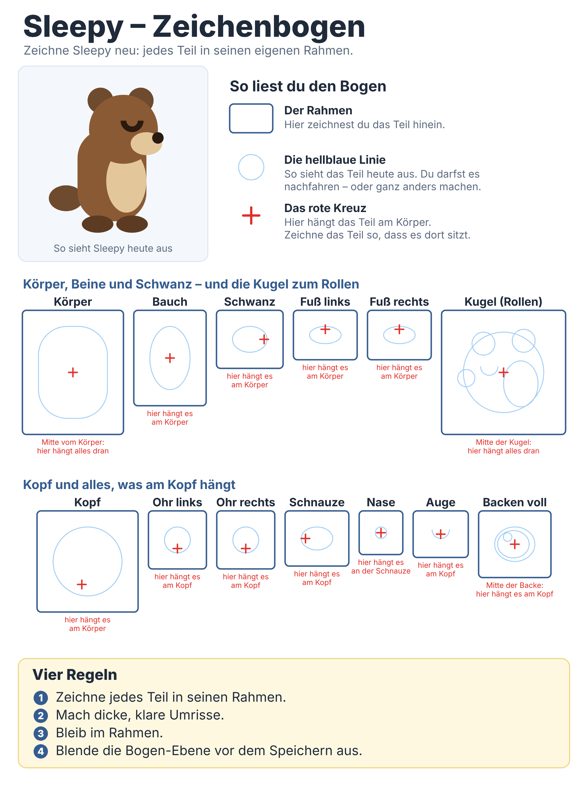

Sleepy – Zeichenbogen
Zeichne Sleepy neu: jedes Teil in seinen eigenen Rahmen.
Zeichenbogen speichernKlappt der Knopf nicht: auf das Bild unten tippen und gedrückt halten → „Zu Fotos hinzufügen“ oder „In Dateien sichern“.

So geht's mit Sketchbook
Die Menüs heißen je nach Sketchbook-Version ein bisschen anders. Wenn du etwas nicht findest, frag Papa.
- Bogen speichern (Knopf oben) – in Fotos oder Dateien.
- In Sketchbook öffnen: neues Bild aus dem Bogen anlegen oder den Bogen importieren. Er soll die ganze Leinwand füllen und seine Größe behalten (2048 × 2732).
- Ebenen öffnen (Symbol mit übereinanderliegenden Blättern). Der Bogen liegt unten.
- Neue Ebene darüber anlegen (Plus). Auf der neuen Ebene zeichnest du.
- Bogen-Ebene halb durchsichtig stellen (Deckkraft etwa die Hälfte).
- Zeichnen: kräftiger, dicker Stift, dicke klare Umrisse, Farbe erlaubt (aber kein Hellblau), im Rahmen bleiben. Das rote Kreuz zeigt, wo das Teil am Körper hängt.
- Bogen-Ebene ausblenden (Auge). Hat Sketchbook eine Hintergrundfarbe, blende die auch aus.
- Als PNG exportieren – nicht JPG, sonst wird der Hintergrund weiß.
- Datei sleepy-alon.png nennen.
- Per AirDrop oder Mail an Papa schicken.
Tipp: Zeichne zuerst nur den Kopf und schick ihn. Wir bauen ihn zum Test ins Spiel ein. Wenn es klappt, zeichnest du den Rest.